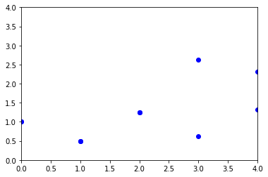

זו הודעה ששייכת לאשכול של הרפרנסים. סוף סוף מישהי עולה על זה 
לייק 1
יצא לי גרף ממש שונה, ואני לא ממש מבין איפה הטעות שלי:

זה גרף של 10K הרצות לא מבין כמעט ולא מודפסות לי נקודות…
נראה לי כדי לעזור לך
צריך לראות את הקוד שכתבת
אבל זה נגד חוקי הפורמט פה
אז תשלח/י הודעה בפרטי
ונראה איך ניתן לעזור…
לייק 1
מציעה לעבור על כל חלק של הקוד בנפרד ולראות. לכתוב על נייר מה צפוי לקרות לכל שלב, ולהשוות עם הדפסות אם צריך